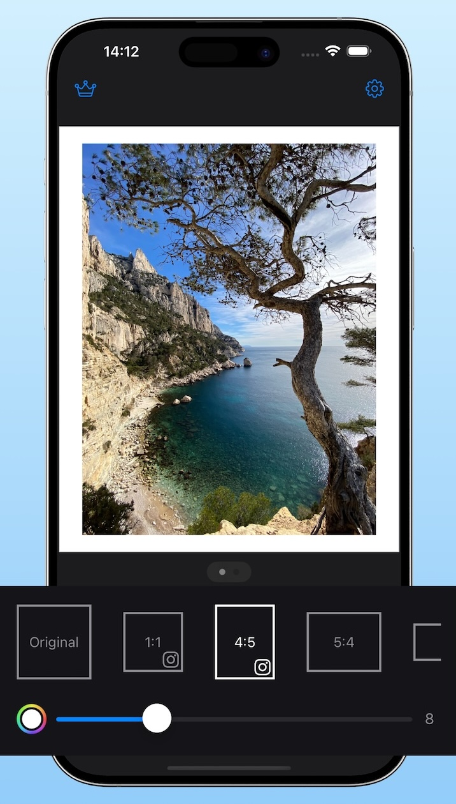

How to add borders to photos on iPhone
The fastest no-crop workflow to add clean borders on iPhone using Simple Border.
Borders can make your photos stand out on Instagram, keep your full composition without cropping, and add a print-like frame around your images.
Add borders with Simple Border
Simple Border is designed specifically for adding clean, no-crop borders to photos and videos on iPhone and iPad. It adds borders as extra pixels around your image, so you keep full resolution – ideal for Instagram, portfolios, and printing.
Steps
- Install Simple Border
Download Simple Border from the App Store and open the app. - Choose your photo
Tap the Choose Media button to pick a photo from your library, or share a photo from the Photos app into Simple Border via the Share Sheet. - Select an aspect ratio
Choose the format you need – for example, square (1:1), vertical 4:5 for Instagram feed, or Original to keep your existing aspect ratio. - Adjust border width and color
Drag the border slider until the frame looks right. Use the color picker to choose white, black, or any custom color that matches your image or brand. - Export your bordered photo
Tap Share or Save to export your image back to Photos, or share directly to Instagram, Messages, and other apps.
Why this method is best for most people
- No cropping – your full photo stays visible.
- Sharp results – borders are added as pixels, so you keep resolution.
- Consistent formats – quickly switch between square, 4:5, 3:4, 9:16, and more.
- Fast workflow – reuse your last settings, batch export (with Premium), and use the Share Extension from Photos.
Tip: If you often post in the same format, enable only your favorite aspect ratios in Simple Border settings to make choosing even faster.
Tips for better-looking borders on iPhone
- Keep thickness consistent. Use the same border width across a series so your feed looks intentional.
- Match your subject. White borders feel classic; black or dark borders can work better for night or moody images; color borders are great for brand consistency.
- Use the right aspect ratio. For Instagram feed, vertical 4:5 usually gets more screen space than square; Stories and Reels are 9:16.
- Watch image quality. Avoid apps that overly compress your photo; check the result at full size before posting.
Simple Border is built to keep resolution high and add borders as pixels, which makes it especially good for photographers, marketing assets, and printing.